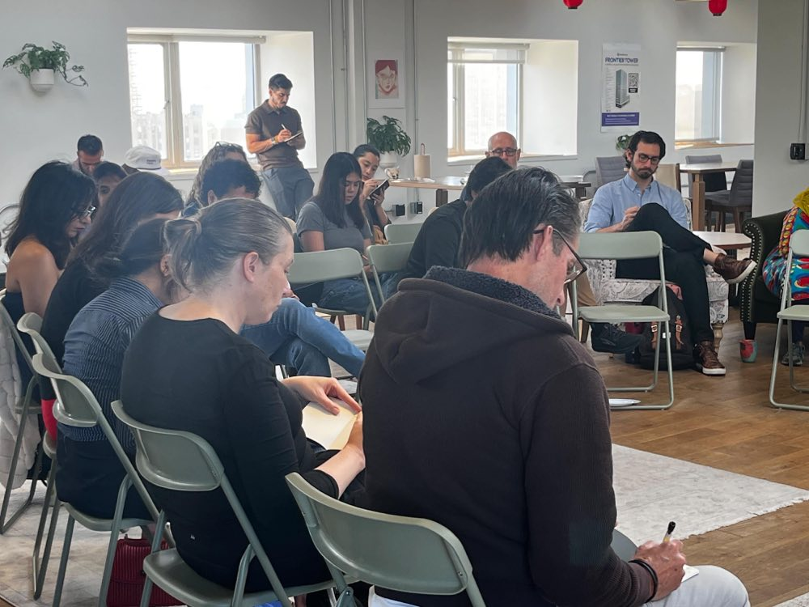

Who decides, who reviews, who is accountable
Agents draft, analyze, recommend, and sometimes act. Without a shared line, one person lets the agent send the client email, another rewrites everything, and someone else quietly stops trusting the work.
Organizations
AI adoption changes more than tools. It changes roles, judgment, trust, and how a team works. We help leadership teams align, managers lead through uncertainty, and teams decide what stays human and what the agents do.
In our own data, managers were the only group where a majority named trust, resistance, or communication as the hardest part.

Three problems we work on
Who still owns what. How a manager talks about what she doesn’t know. Where an agent may act, and who answers when it goes wrong. Those are leadership and work-design questions, and most teams haven’t had the conversation.
Agents draft, analyze, recommend, and sometimes act. Without a shared line, one person lets the agent send the client email, another rewrites everything, and someone else quietly stops trusting the work.
The work moved. The role hasn’t caught up. People are asking what they are valued for now, and nobody has told them.
Leadership wants speed. The team wants a say and time to adjust. The manager in the middle is expected to communicate a certainty she doesn’t have.
How we work
Smallest useful step first. Usually one workshop with one team. Then we decide together whether the rest is needed.
Two workshops
Sit in before you bring one inside. Each one has one audience, one problem, and one thing you leave with.
A working session for a team where agents already do meaningful work. Use real workflows to decide what stays human, what agents own, where review is required, and who answers for each.
For people whose roles are changing and the managers leading others through the same uncertainty. Separate what has changed from what is still unknown, name what you still own, and choose the conversation that can’t wait.
Inside a company
Leadership coaching. 1:1 for the leaders steering the change and the people whose roles moved most.
A monthly manager practice. Ninety minutes where your managers bring the situations that came up, and leave with the next conversation to have.
Research you can use. Aggregated, consented findings from our public rooms, and a learning report from your own sessions. Themes only, never individuals.
An AI Enablement Lab, last. Once a team has agreed where the line is, we test one meaningful workflow with explicit human review, measures, escalation, and a real stopping rule. It comes after alignment on purpose. Before that, a lab just automates the confusion.
Want to sample it first? Next public dates →
Questions
Training teaches tools. It doesn’t decide what people still own, how managers talk about uncertainty, where agents may act, or who remains accountable. We start there. Once that is clear, the tools land.
With the smallest useful step, usually one workshop with one team. Both workshops run in public first, so you can sit in before you bring one inside. Pricing is scoped on a call.
We don’t replace your technical AI strategy, security, legal, or compliance people, and we don’t write a governance policy from the outside. The work has to produce decisions, agreements, experiments, or changed practice. If it only produced a good conversation, it didn’t work.
Nima Imani. ICF-certified coach and solution architect with a decade in software, data, and AI, including EY and Neo4j. About →